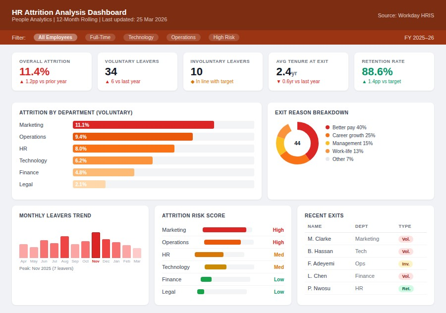
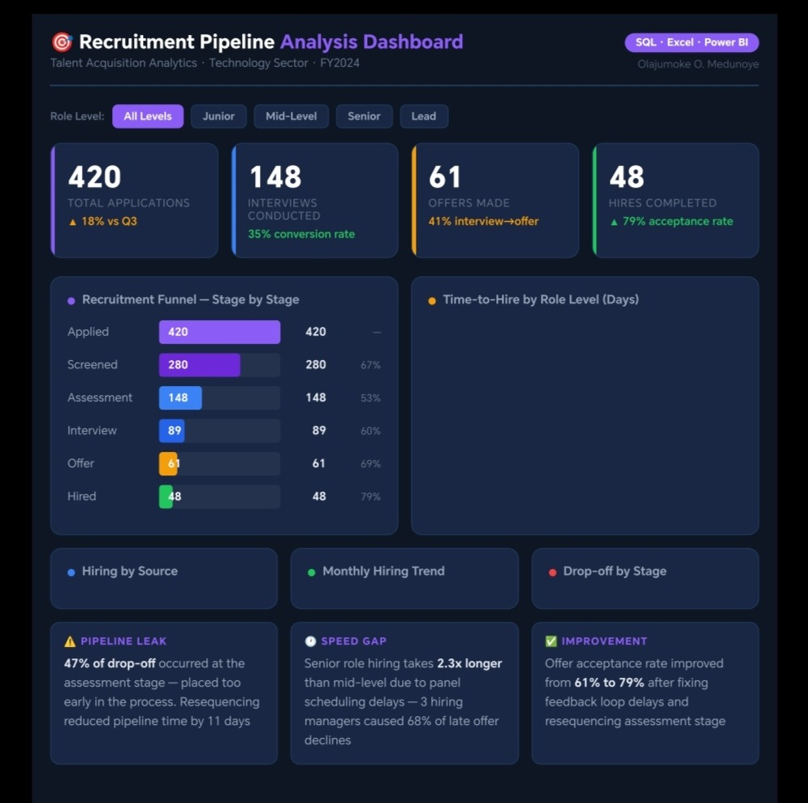
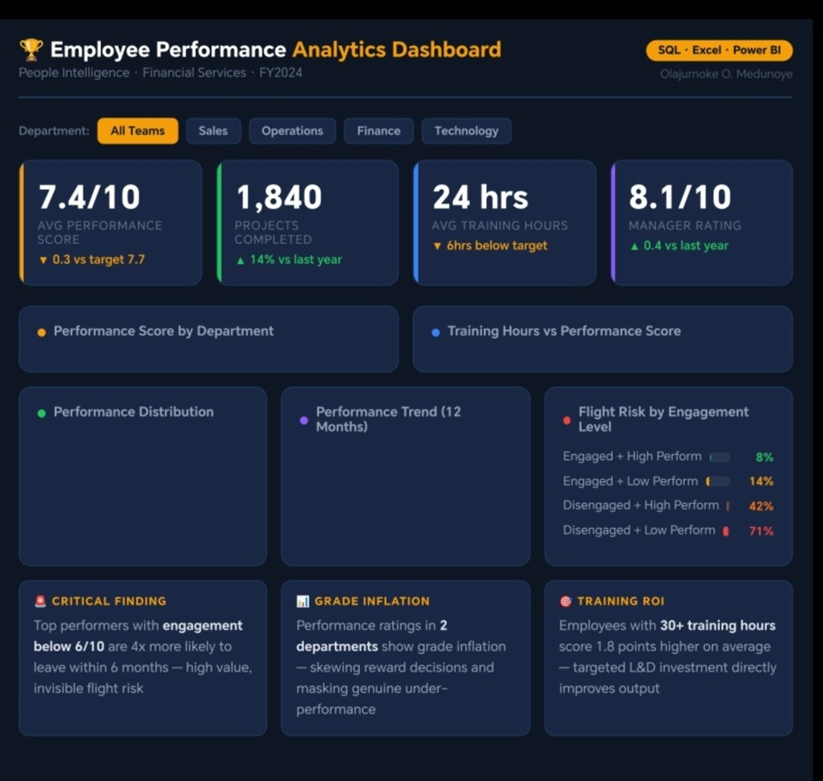
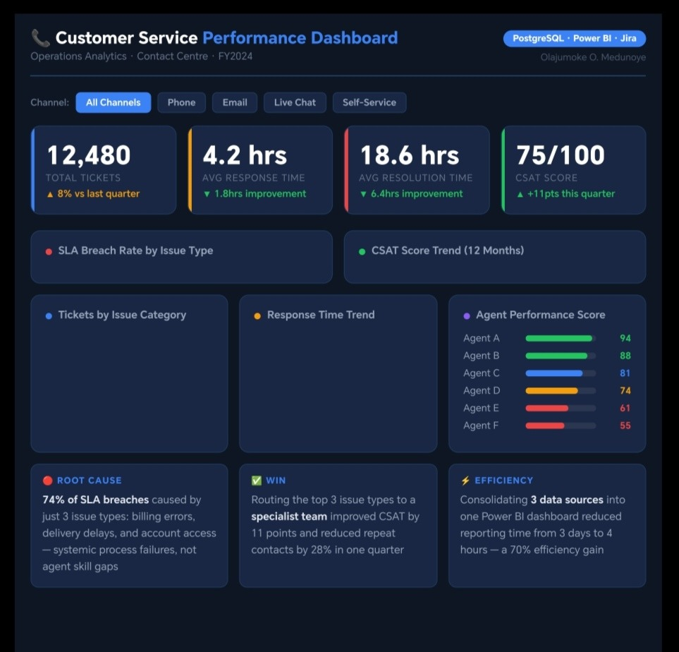
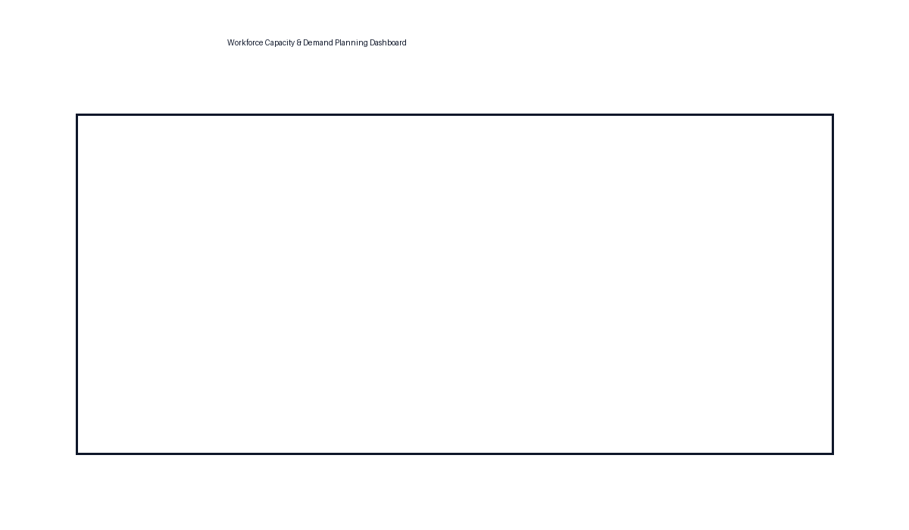

HR & People Analytics | Workforce Planning | Predictive Analytics
Helping organisations reduce attrition and optimise workforce planning using data-driven insights.
Download CV Download Project PresentationI am a HR & People Analytics professional based in the United Kingdom, specialising in turning workforce and operational data into actionable insights that support better business decisions.
With a background in Human Resource Management (MSc) and professional accreditation (Assoc CIPD, MHRAP), I combine HR expertise with data analytics skills to build dashboards and reporting solutions that help organisations understand workforce trends, improve performance, and plan resources effectively.
I am currently open to remote and hybrid HR and People Analytics opportunities where I can help organisations leverage data to improve workforce outcomes and support strategic decision-making.

Identified attrition patterns and workforce risk areas to support retention strategies.
Tools: Power BI, SQL, Excel

Analysed recruitment funnel performance and hiring bottlenecks.
Tools: Power BI, Excel

Tracked workforce productivity and performance trends.
Tools: Power BI, Excel

Monitored service performance metrics and workload trends.
Tools: Power BI, Excel

Forecasted staffing demand and monitored workforce capacity.
Tools: Power BI, Excel
Built predictive analytics to identify employees at risk of leaving.
Tools: Python, SQL, Power BI
Leeds Beckett University, United Kingdom
Dissertation: Data-Driven Approaches to Workforce Planning in the Digital Age
Ajayi Crowther University, Nigeria
Email: olajumokemedunoye@gmail.com
View LinkedIn Profile